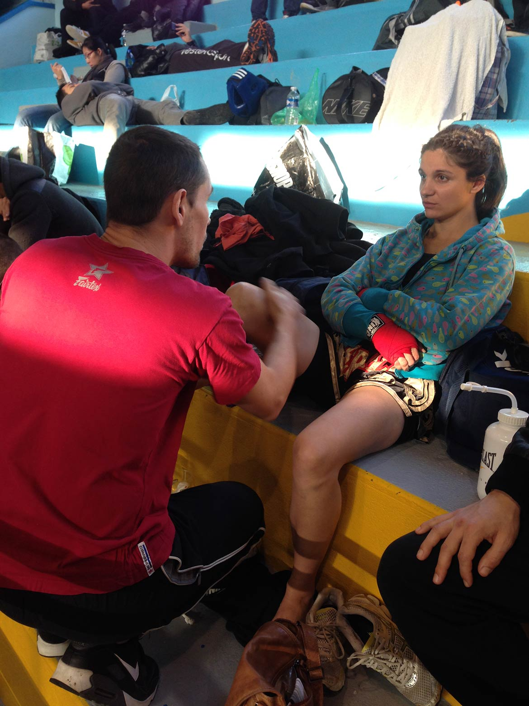
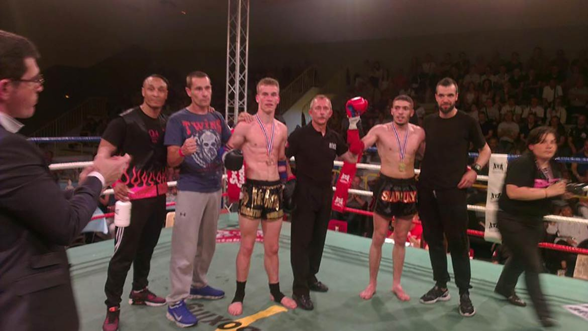
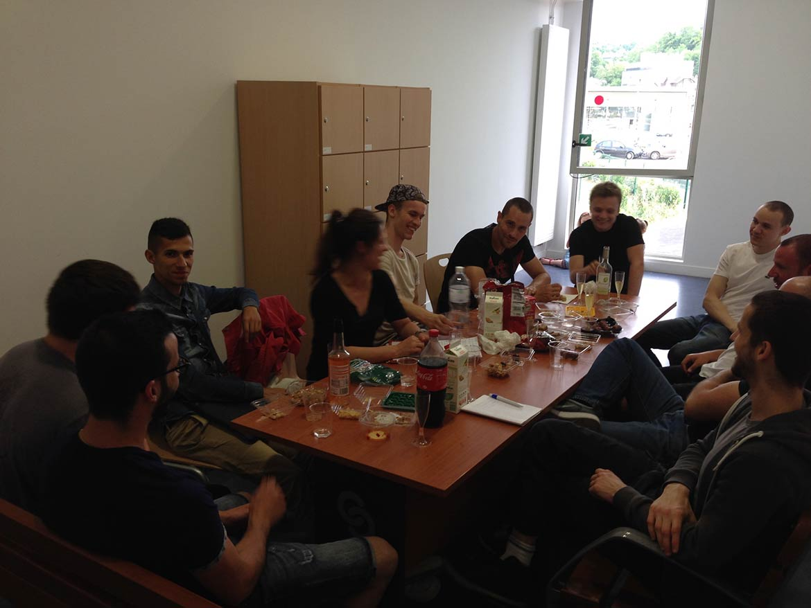

Rétrospective des évènements de la saison 2014/2015
Retourner aux photosPix a fait quart de finaliste en coupe de France 2014 class C
Toujours aussi nombreux pour supporter et porter chance à nos compétiteurs
Antoine "le lion" est arrivé 3e de la coupe de France Junior 2014
Romain est arrivé 2e de la coupe de France 2014 class C
Mélanie a fait 2e à la Coupe de France 2014 class C

On fête la fin d'année avec le club
On oublie pas de trinquer
François nous enseigne le Ram Muay du club
Pix arrive quart de finaliste au Championnat de France 2015 en class B
En tout il a à son actif 11 combats, 7 victoires dont 6 par KO

Mélanie, "praying mantis", arrive vice championne de France 2015 class B
En tout elle a à son actif 26 combats, 20 victoires
Julien, "croatian surgeon", arrive vice champion de France 2015 class B
En tout il a à son actif 14 combats dont 11 victoires, 3 défaites et 5 KO

Journée avec le club de Nanterre
Assemblée générale du club
